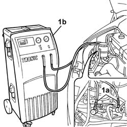

0010T84 COOLANT FOR AIR CONDITIONING SYSTEM DEHYDRATE AND RECHARGE
- Path
- Procedures > 00 MAINTENANCE > 0010 NEW UNITS AND PLANNED MAINTENANCE > 0010T VEHICLE OIL AND FLUIDS > 0010T84 COOLANT FOR AIR CONDITIONING SYSTEM DEHYDRATE AND RECHARGE
- Kind
- repair procedure (removal / refitting; the operation number is the code)
- Applies to
- all engines; all production periods
- Interactive page
- https://sloeber94.github.io/elrnDB-fDct/en/#/244000610
Applies to: all engines; all production periods
Applies to: all engines; all production periods
- Let the engine run with the air conditioning on for 10 - 15 minutes.
- Switch off the engine.
1. Connect the pressurizing and draining pipes (1a) for the drainage equipment (1b) to the valves on the air conditioning system high pressure and low pressure pipes.

Applies to: all engines; all production periods
- Start the procedure for draining the refrigerant fluid, following the instructions in the equipment manual.
- Whilst draining the system the compressor fluid that comes out collects in a special container.
- Refill the system with exactly the same amount of fluid indicated on the container.
 | Description | Qty. | Component | Type | Classification |
|---|---|---|---|---|---|
. | - | - | AIR CONDITIONING SYSTEM | Oil | SP 20 |
Applies to: all engines; all production periods
- If some of the components are being replaced, the following amount of oil must be added for each of the replaced components:
- Drier filter: 15 cm
3
- Pipes: 5 cm
3
/m
- Evaporator: 40 cm
3
- Condenser: 40 cm
3
- If there are accidental breaks that cause the "rapid" draining of the system (in less than 5 minutes) then the exact amount of fluid that comes out cannot be determined because the high pressure may cause seepage. Add the following recommended amount of oil 75 cm
3
.
- Start the procedure for repressurizing the refrigerant fluid, following the instructions in the equipment manual.
- Add the recommended quantity of refrigerant fluid.
| Description | Qty. | Component | Type | Classification |
|---|---|---|---|---|---|
. | R134a | 800 ± 40 g | AIR CONDITIONING CIRCUIT | Fluid | - |
Applies to: all engines; all production periods
| Description | Qty. | Component | Type | Classification |
|---|---|---|---|---|---|
. | R134a | 1000 ± 40 g | AIR CONDITIONING CIRCUIT | Fluid | - |
Applies to: all engines; all production periods
| Description | Qty. | Component | Type | Classification |
|---|---|---|---|---|---|
. | R134a | 900 ± 25 g | AIR CONDITIONING CIRCUIT | Fluid | - |
Applies to: all engines; all production periods
- In the case of damage to the compressor or other system components or following prolonged exposure of the pipes to the air (more than 6 hours) the WASHING procedure must be carried out as follows.
- Clean the pipes connected to the compressor using a jet of air.
- Connect the (drained) system to the repressurizing equipment.
- Introduce the recommended quantity of refrigerant fluid at the high pressure side.
- Collect the refrigerant fluid at the low pressure side.
- Repeat the introduction and collection of fluid.
- Proceed with draining and repressurizing the system as illustrated previously.
- Refill the system with the recommended amount of oil.
| Description | Qty. | Component | Type | Classification |
|---|---|---|---|---|---|
. | - | - | AIR CONDITIONING SYSTEM | Oil | SP 20 |
Topics that link to this page (32)
- 1004B12 POWER UNIT WITH MANUAL GEARBOX - R+R FOR VERSIONS WITH A/C
- 1008B10 POWER UNIT FRONT MOUNT (TIMING SIDE) FLEXIBLE BLOCK - REPLACE
- 1016C11 SINGLE CYLINDER HEAD-R R GASKET FOR VERSIONS WITH AIR CONDITIONER
- 1028H11 PISTON CONNECTING ROD SET - R R
- 1084B16 ENGINE OIL PUMP - R+R VEHICLES WITH A/C
- 1088B24 ENGINE COOLING RADIATOR - R R FOR AIR CONDITIONED VERSIONS
- 1088C10 WATER PUMP - R + R
- 5040A20 AIR CONDITIONER COMPRESSOR - R+R - INCLUDES FLUID LEVEL CHECK AND TOP UP IF NECESSARY
- 5040A26 COMPRESSOR MOUNT - R R
- 5040A40 AIR CONDITIONER CONDENSER - R+R
- 5040A44 AIR CONDITIONER DEHYDRATING FILTER/ACCUMULATOR - R+R
- 5040A45 CONDENSATOR SUPPORT CROSS PIECE/BRACKETS - R.R.
- 5040A50 PIPE FROM COMPRESSOR TO AIR CONDITIONER CONDENSER - R+R
- 5040A52 PIPE FROM CONDENSER TO DEHYDRATING FILTER - R+R
- 5040A54 PIPE FROM DEHYDRATING FILTER TO EXPANSION VALVE - R+R
- 5040A58 PIPE FROM EXPANSION VALVE TO COMPRESSOR - R+R
- 5040A71 PIPING BETWEEN THE EXPANSION VALVE AND THE FITTING PLATE ON THE ROOF PANEL - R.R.
- 5040A75 PIPING BETWEEN THE DEHYDRATING FILTER AND THE PASSAPARETE FITTING ON THE ROOF PANEL - R.R.
- 5040A79 PIPING BETWEEN THE COMPRESSORE AND THE FITTING PLATE ON THE ROOF PANEL - R.R.
- 5040A80 EXPANSION/CONNECTION PIPE - R R
- 5040B22 AIR CONDITIONING SYSTEM DE-MISTER THERMOSTAT - R+R
- 5040B30 EXPANSION VALVE (TUBE ORIFICE) - R+R
- 5040C10 AIR CONDITIONER CONTROL SUPPORT - R+R
- 5040C12 AIR CONDITIONER HOUSING - R R WITH FACIA DISCONNECTED
- 5040C30 FAN MOTOR - R+R
- 5040C50 AIR CONDITIONER HEATER RADIATOR - R+R
- 5040C56 CONNECTING PIPE BETWEEN TAP AND AIR CONDITIONING HEATER RADIATOR - R.R.
- 5040C58 AIR CONDITIONING HEATER RADIATOR TAP - R.R.
- 5040C60 AIR CONDITIONING EVAPORATING UNIT - R.R.
- 5040C64 A/C MANUAL CONTROL SWITCH (ONE) - R+R
- 5040D47 AIR DISTRBUTION FLAP - AIR INTAKE/RECIRCULATION - TAP TRANSMISSION - R.R.
- 7040L17 PASSENGER COMPARTMENT FLOOR FRONT CARPET - R R